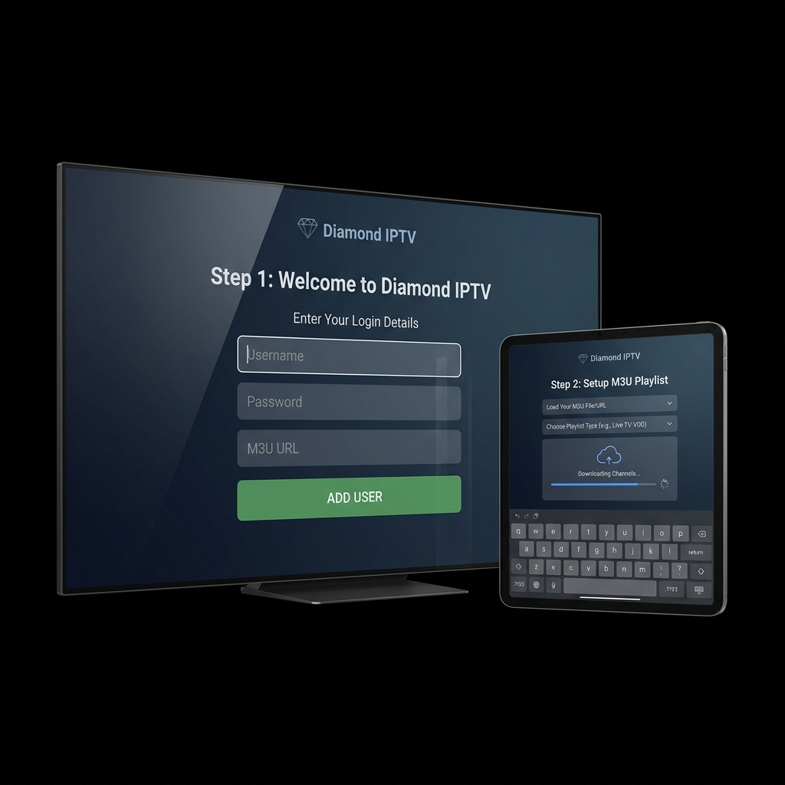

IPTV Installeren
Stap-voor-stap Handleiding
IPTV installeren op al je apparaten was nog nooit zo makkelijk. Volg onze eenvoudige, stapsgewijze handleiding om direct te beginnen met kijken in haarscherpe 4K kwaliteit op je Smart TV, telefoon, tablet of computer.

Kies Je Apparaat
Selecteer het apparaat waarop u IPTV wilt installeren
Samsung Smart TV
Aanbevolen app: Smart IPTV of IPTV Smarters Pro
Open de App Store
Navigeer naar het hoofdmenu van uw televisie en open de officiële Samsung App Store. Gebruik de zoekfunctie bovenaan en typ 'Smart IPTV', 'IPTV Smarters Pro' of 'IBO Player' in om de juiste applicatie te vinden.
Download en installeer
Klik op de downloadknop en wacht tot de applicatie succesvol is geïnstalleerd op uw televisie. Open de nieuw gedownloade app direct vanuit het menu zodra de installatie volledig is afgerond.
Vind het MAC-adres of voer inloggegevens in
Wanneer u Smart IPTV of IBO Player opent, ziet u direct een uniek MAC-adres op het scherm verschijnen; dit heeft u nodig om de zenderlijst te uploaden. Bij IPTV Smarters Pro wordt u simpelweg gevraagd om direct in te loggen met de Xtream Codes API (dit omvat een gebruikersnaam, wachtwoord en specifieke portal URL).
Activeer en geniet
Voer de exacte inloggegevens of configuratielinks in die u van ons onmiddellijk per e-mail heeft ontvangen direct na de bevestiging van uw aankoop. Klik op inloggen of verzenden, laat de zenderlijst kort laden en begin vervolgens direct met het streamen van duizenden live tv-zenders en films!
LG Smart TV
Aanbevolen app: Smart IPTV of IPTV Smarters Pro
LG Content Store openen
Druk op de Home-knop van uw afstandsbediening en navigeer naar de LG Content Store.
Zoek de app
Gebruik het vergrootglas-icoon om te zoeken naar 'IPTV Smarters Pro' of 'Smart IPTV'. Selecteer de app en klik op Installeren.
Open de app en configureer
Start de app. Kies voor 'Login with Xtream Codes API' als u IPTV Smarters Pro gebruikt. Bij Smart IPTV noteert u het weergegeven MAC-adres om de m3u link via hun website te uploaden.
Inloggegevens invoeren
Vul een profielnaam in (bijvoorbeeld Diamond), samen met de door ons geleverde gebruikersnaam, het wachtwoord en de portal server-URL. Klik op Add User om te starten met kijken naar uw favoriete programma's.
Android TV
Aanbevolen app: IPTV Smarters Pro
Google Play Store
Ga naar het homescherm en open de officiële Google Play Store op uw Android TV-apparaat (bijv. Chromecast met Google TV, NVIDIA Shield, of ingebouwde Android TV software op Sony en Philips).
Zoeken en installeren
Zoek met de afstandsbediening of stembesturing naar 'IPTV Smarters Pro', 'TiViMate' of een andere compatibele IPTV-app. Klik op Installeren, wacht tot de download voltooid is, en vervolgens klikt u op Openen.
Inlogmethode kiezen
Accepteer de algemene voorwaarden en kies voor de optie 'Login with Xtream Codes API'.
Gegevens invullen
Voer uw M3U gegevens in (gebruikersnaam, wachtwoord en URL). Dit wordt na uw bestelling direct verzonden. Druk op Add User.
Amazon Fire TV Stick
Aanbevolen app: Downloader & IPTV Smarters Pro
Voorbereiding instellingen
Ga naar Instellingen > My Fire TV > Developer Options. Schakel de opties voor 'Apps van onbekende bronnen' en 'ADB Debugging' in.
Downloader app installeren
Ga naar het thuisscherm, klik op Zoeken en type 'Downloader'. Installeer en open deze applicatie.
Download IPTV Smarters Pro
Voer in de URL-balk van de Downloader-app de directe downloadlink in (bijv. iptvsmarters.com/smarters.apk) en klik op Go. Voltooi de installatie.
Log in
Open IPTV Smarters Pro, accepteer de voorwaarden en log in via Xtream Codes API met de door ons geleverde gegevens.
iPhone & iPad (iOS)
Aanbevolen app: IPTV Smarters Pro
Apple App Store
Open de App Store op uw iPhone of iPad en navigeer naar de zoekfunctie.
Zoeken en installeren
Zoek op 'IPTV Smarters Pro' (of Smarters Player Lite). Download en installeer de applicatie op uw apparaat.
App configureren
Open de app na installatie. Accepteer eventuele voorwaarden en selecteer 'Login with Xtream Codes API'.
Inloggegevens invullen
Vul een naam naar keuze in voor de afspeellijst, gevolgd door uw gebruikersnaam, wachtwoord en server-URL. Tik op Add User om te beginnen.
Windows PC / Laptop
Aanbevolen app: IPTV Smarters Pro for Windows
Software downloaden
Ga in uw webbrowser naar de officiële website van IPTV Smarters en download de Windows-versie (.exe bestand).
Installatie voltooien
Open het gedownloade bestand en volg de installatie-wizard op uw scherm totdat het programma volledig is geïnstalleerd.
Programma openen
Start de applicatie via het bureaublad of het startmenu. Het inlogscherm verschijnt direct.
Gegevens invoeren
Vul uw gebruikersnaam, wachtwoord en de server URL in die wij u na uw bestelling hebben gemaild. Klik op 'Add User' om de zenders te laden.
MacBook / iMac
Aanbevolen app: IPTV Smarters of VLC Media Player
Kies de software
Voor de beste ervaring downloadt u de macOS-versie van IPTV Smarters Pro. Een goed alternatief is de standaard VLC Media Player.
Downloaden en installeren
Download het .dmg bestand. Open het en sleep de app naar de map 'Applicaties' op uw Mac om de installatie af te ronden.
Geef toestemming
Omdat het mogelijk van buiten de App Store is gedownload, moet u bij de eerste keer openen via 'Systeemvoorkeuren > Beveiliging' toestemming geven.
Inloggen
Open de app en log in met de Xtream Codes API gegevens (Gebruikersnaam, Wachtwoord en Portal URL) uit onze welkomstmail.
Apple TV
Aanbevolen app: IPTV Smarters Pro
App Store openen
Ga naar de App Store op het beginscherm van uw Apple TV via de afstandsbediening.
App zoeken
Gebruik de zoekfunctie om 'IPTV Smarters Pro' op te zoeken en download de app op uw Apple TV.
Kies login type
Zodra u de app opent, krijgt u de optie om in te loggen. Kies hier voor de optie 'Login met Xtream Codes API'.
Vul abonnementsgegevens in
Voer een willekeurige profielnaam in, gevolgd door uw unieke login, wachtwoord en portal URL. Klik op 'Add User' om te streamen.
Tips voor de Beste Kijkervaring
Optimaliseer uw verbinding en apparaat voor de ultieme, haperingsvrije IPTV beleving.
1. Gebruik een Bekabelde Verbinding
Voor de meest stabiele stream, zonder irritante buffering bij live sport en 4K films, raden wij altijd een rechtstreekse ethernetkabel (LAN) aan in plaats van Wi-Fi, omdat Wi-Fi gevoelig is voor storingen.
2. Plaats Router Dichtbij
Indien u toch absoluut Wi-Fi moet gebruiken, zorg dan dat uw draadloze router zo dicht mogelijk bij de TV of mediaspeler staat, en gebruik bij voorkeur een snelle 5GHz verbinding in plaats van 2.4GHz.
3. Overweeg een Premium VPN
Sommige internetproviders, zoals Ziggo of KPN, blokkeren of vertragen soms IPTV-verkeer (throttling). Een kwalitatieve VPN zoals NordVPN of Surfshark lost dit probleem onmiddellijk op en beveiligt tevens uw privégegevens.
4. Herstart Apparaten Regelmatig
Start uw modem, router, en uw IPTV-apparaat (zoals de Smart TV, Firestick of mediaspeler) minstens één keer per week opnieuw op. Dit wist het tijdelijke cachegeheugen en verbetert de algehele prestaties drastisch.
5. Gebruik Aanbevolen Premium Apps
Niet alle applicaties zijn gelijk in prestaties. Gebruik bewezen premium apps zoals IPTV Smarters Pro, Smart IPTV of TiViMate Premium om te profiteren van de snelste interface, automatische zender updates en correcte EPG (tv-gids) synchronisatie.
Veelgestelde Vragen over IPTV Installatie
Voor de meeste Smart TV's, smartphones, en tablets raden wij IPTV Smarters Pro of Smart IPTV sterk aan. Deze specifieke applicaties bieden momenteel de meest stabiele verbinding, uitgebreide functionaliteiten en een zeer gebruiksvriendelijke interface. Voor gebruikers met Android apparaten of een Nvidia Shield is de app 'TiViMate Premium' ook een absoluut uitstekende keuze, vooral vanwege de soepele bediening en snelle EPG weergave.
Het volledige installatieproces duurt meestal slechts 5 tot maximaal 10 minuten, afhankelijk van uw type apparaat, uw ervaring en de snelheid van uw internetverbinding. Met onze gedetailleerde, stap-voor-stap handleiding is het downloaden en instellen van de app werkelijk zo geregeld. Bovendien ontvangt u direct na uw succesvolle bestelling volautomatisch de benodigde inloggegevens per e-mail, zodat u meteen aan de slag kunt zonder te hoeven wachten.
Het gebruik van een VPN (Virtual Private Network) is absoluut niet verplicht om onze dienst te kunnen gebruiken, maar we raden het in sommige gevallen wel ten zeerste aan voor extra privacy en om eventuele internetblokkades of netwerkvertragingen (throttling) van grote internetproviders effectief te omzeilen. Let er hierbij wel op dat u altijd een snelle, betaalde VPN-verbinding kiest (zoals NordVPN of ExpressVPN) om ongewenst bufferen of haperen tijdens het streamen te voorkomen.
Herstart als allereerste stap zowel uw IPTV-apparaat als uw internetrouter, en controleer vervolgens de sterkte van uw internetverbinding. Controleer ook altijd of uw IPTV-abonnement nog actief en niet per ongeluk verlopen is. Soms kan een simpele update van de app of het opnieuw invoeren van de inloggegevens het probleem direct verhelpen. Werkt het daarna nog steeds niet of blijft u foutmeldingen zien? Neem dan gerust contact op met onze vriendelijke 24/7 klantenservice; wij lossen het graag direct voor u op!
Ja, wij bieden specifieke abonnementen aan waarbij u op meerdere apparaten tegelijkertijd kunt kijken, wat ideaal is voor grote gezinnen of het delen met huisgenoten. Let er hierbij wel goed op dat u tijdens het bestellen uitdrukkelijk een abonnement met meerdere 'connecties' of 'schermen' kiest. Indien u met een standaard abonnement op twee apparaten tegelijk kijkt, kan de verbinding geblokkeerd worden of gaan haperen. Bekijk onze gedetailleerde pakketten voor alle specifieke opties en prijzen.
Hulp Nodig Bij De Installatie?
Lukt het niet of heeft u nog geen abonnement? Ons support team staat 24/7 voor u klaar om u stap voor stap te begeleiden.